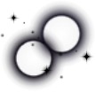

Skip to content

torch
-ttt
Toggle navigation menu
⌘
K
torch
-ttt
/
API Reference
/
torch_ttt.engine.masked_ttt_engine.MaskedTTTEngine
torch_ttt.engine.masked_ttt_engine.MaskedTTTEngine
#
class
torch_ttt.engine.masked_ttt_engine.
MaskedTTTEngine
[source]
#
Masked autoencoders-based
test-time training
approach.
torch_ttt.engine.ttt_pp_engine.TTTPPEngine
torch_ttt.engine.actmad_engine.ActMADEngine